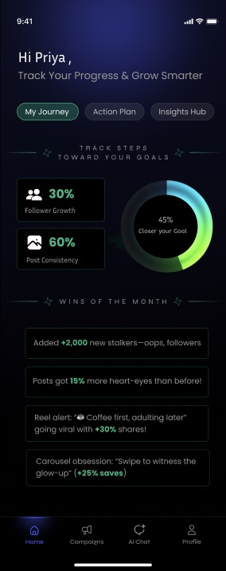
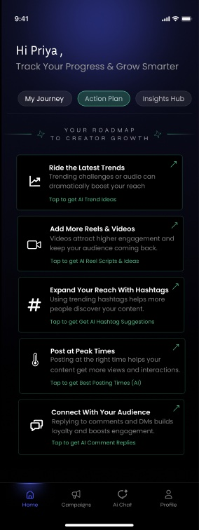
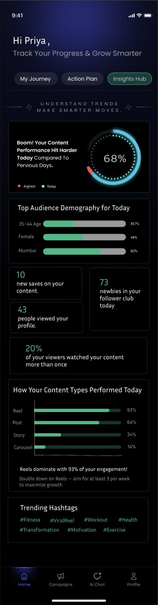

Creators joined Nurdd. Then they stopped coming back.
Scroll to flip ↻Nurdd connects creators with brands. Brands look for active creators, so when creators joined and then stopped using Nurdd, they missed out on collaborations and the platform had less to offer brands. Working with the Co-founder and the Designer, I helped design a dashboard that gives creators a reason to come back every day.
At a glance
- ProblemCreators didn’t come back
- ResearchOther creator platforms
- QuestionsWhat creators keep asking
- DashboardOne tab per question
- FigmaWith Co-founder and Designer
Why weren’t creators coming back?
They could see their numbers, but not what to do with them.
Scroll to flip ↻Retention was the problem the team was focused on. A creator would join, look at their numbers, and then have nothing telling them what to do next. Without a reason to return, they drifted away, and fewer active creators meant less for brands to choose from.
The loop we wanted to break
The goalMake Nurdd part of a creator’s routine by showing their progress, what to work on next, and the steps to get there.
What did I learn from other creator platforms?
How creators use them, how they judge performance, and how they get hired.
Scroll to flip ↻I researched competing creator platforms to understand three things, and used what I found to shape how Nurdd could keep creators engaged.
How creators and agencies use these platforms day to day.
Which numbers creators and brands look at to decide what’s working.
What brands look for before they choose a creator.
What I concludedAnalytics alone tell creators what happened. A habit forms when the product also tells them what to do next.
Three questions every creator keeps asking
How did we turn that into a dashboard?
One tab for each question, and every insight paired with an action.
Scroll to flip ↻Key product decisionDon’t just show analytics. Pair every insight with an action, so creators always know their next step.
A day with the dashboard
Priya’s path Priya is the sample creator used in the designs.
One tab for each question
| Tab | The creator’s question | What it shows | Why it brings them back |
|---|---|---|---|
| My Journey | Am I getting closer to my goal? | Goal progress, follower growth, posting consistency and wins of the month | Visible progress and small wins keep creators motivated |
| Action Plan | What should I do next? | Suggested actions: trends, Reels, hashtags, posting times, comment replies. Each opens an AI helper. | Turns data into a next step, so creators don’t have to work it out |
| Insights Hub | What’s working right now? | Today’s performance, audience, saves, profile views, results by content type, trending hashtags | It changes every day, so there’s a reason to check every day |
What did the dashboard look like?
Three tabs, designed in Figma with the Co-founder and Designer.
Scroll to flip ↻I turned the research into the dashboard’s structure, and worked with the Co-founder and the Designer to turn these ideas into Figma designs.



Figma design. Sample data only: “Priya” and all numbers are placeholders. Not confirmed as launched.
In the designs, Insights Hub shows that Reels drove most of today’s engagement. Action Plan turns that into a step, “Add more Reels & Videos”, with an AI helper that suggests Reel scripts. The insight and the action sit side by side, so the creator never has to work out what to do next.
What happened, and what would I do next?
A design built around one idea: give creators a next step.
Scroll to flip ↻A Figma design for a three-tab creator dashboard, made with the Co-founder and the Designer. I don’t know whether it launched after my internship, so I present it as a design.
Retention comes from giving users a next step, not more data.
Show the dashboard to 5–6 creators before polishing it, to learn which tab they’d really open every day, and track weekly returning creators to see if it changes behaviour.
I don’t have usage numbers for this design, so this page shows none.
Up nextNurdd’s free tools: value before sign-up